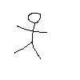

Produzir grafos é fácil, qualquer criança pode fazer isso e realmente faz quando desenha a forma padrão do homem:
Produzir grafos é fácil, qualquer criança pode fazer isso e realmente faz quando desenha a forma padrão do homem:
Mas, como você  pode ver, o nó resultante não é tremendamente atraente.
Então, surge a questão de como projetar bonitos olhais. A maneira mais fácil quando você começa é confiar em redes. Existem muitas redes e mais geralmente azulejos ou pastilhas. Um site maravilhoso é dedicado a este assunto fascinante. Os mais conhecidos são o quadrado, as redes triangulares e hexagonais. Não vou apresentar-lhe o quadrado da rede, todos conhecem este. Eu acho que você pode desenhar uma rede triangular. Então você pode desenhar um hexágono, assim como você obtém uma rede hexagonal apagando a metade das arestas de uma rede triangular. Eles estão relacionados de maneira mais profunda porque a rede dupla de uma rede hexagonal é uma rede triangular. Estudaremos mais esta noção matemática e veremos que é útil.

Mas a verdade é que, se você tiver apenas redes, então você produzirá apenas tranças chatas como essa:

Você deve incomodar um pouco para obter algo agradável. Para fazer isso, você deve impedir que alguns cruzamentos ocorram.
| Você pode fazer isso de duas maneiras: |
 |
se torna |
|
|
ou |
 |
Agora você tem três tipos de arestas, as mais comuns em que ocorrem os cruzamentos e as outras duas formas novas onde os fios não cruzam, mas se recuperam.


Você codifica esta informação em seu gráfico, por cortar a aresta para a primeira maneira de impedir o cruzamento e por engrossar para o segundo caminho. Para ser completo de fato, um seria necessário também a outra maneira de cruzamento, que é obtido por inversão de acima e debaixo de pedaços; Codificaremos esta quarta vantagem por uma linha pontilhada.
Na maneira do labirinto de pensar sobre tudo isso, essas paredes corta a porta, seja divisão em duas ou fechando completamente:


A maneira mais fácil é começar com escadas de quadrados ou triângulos, com algumas paredes colocadas harmoniosamente. O seguinte exercício não deve parecer agradável, mas sim dar-lhe padrões, de comprimento dois ou três, que você pode repetir ao longo de uma escada. Tenha cuidado para que algumas arestas sejam mais espessas do que outras! Certifique-se de diferenciá-las.
{kind=link}
Você pode ver as respostas ou passar para o próximo tópico: extração.